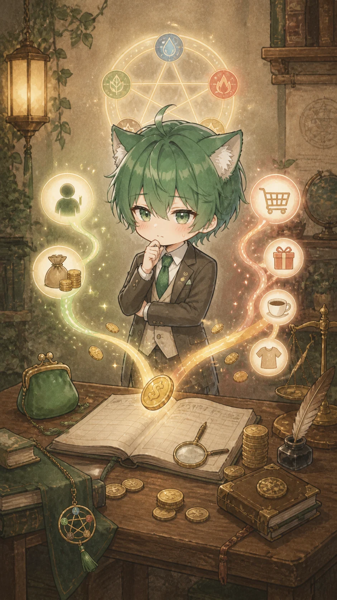
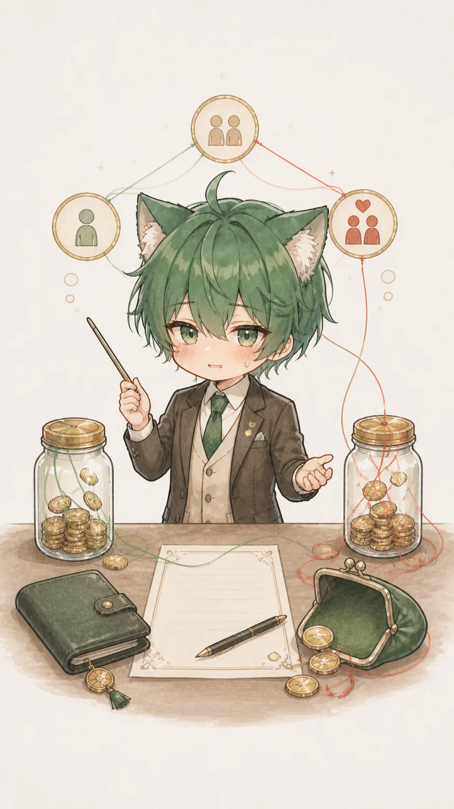
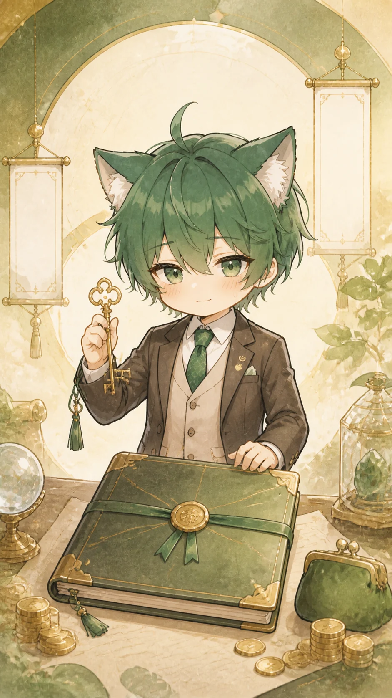

무료 요약
돈이 안 모이는 이유, 일단 여기서 갈립니다
수입이 약해서만이 아니라, 들어온 돈이 관계·비교·정산 이슈와 같은 속도로 움직이는 흐름일 가능성이 큽니다.
재성 + 비겁
관계 정산
저축 구조
입력값 기준
방금 입력한 돈 흐름
입력값을 확인하고 있어요.
먼저 열리는 12%
무료로 보이는 핵심
결론을 숨기는 방식이 아니라, 지금 돈이 새는 방향과 첫 행동만 먼저 보여드립니다.
무료 공개
12%
지금은 더 벌기보다, 들어온 돈이 누구와 어떤 약속에서 흩어지는지 먼저 잡는 쪽이 맞아 보입니다.

핵심 신호
같이 벌고 같이 쓰는 패턴이 강해요
비겁 흐름은 협업·경쟁·분배가 돈에 붙는 구조입니다. 좋게 쓰면 같이 키우는 힘이고, 흐려지면 정산이 늦어지는 구간이 됩니다.
결제 후 열리는 항목
전체 리포트 목차
유료 결과에서는 아래 대분류 8개를 기준으로 세부 풀이를 열어봅니다.

전체 결과
9,900원 결제 후 바로 이어서 봅니다
결제 후 05 단계에서 전체 목록과 채팅형 풀이가 열리고, 각 항목은 06 상세 화면으로 이어집니다.
제공 범위8개 대분류 · 41개 중분류
이동 경로전체 목록과 상세 풀이
보호 기준권한 확인 후 열람
상태 확인
로그인 상태를 확인하고 있어요
잠시만 기다려주세요.
결제 전 확인
결제 취소나 실패가 발생해도 무료 결과는 유지됩니다. 실제 환불 조건과 처리 창구는 운영 결제 페이지의 정책 문구로 연결해야 합니다.